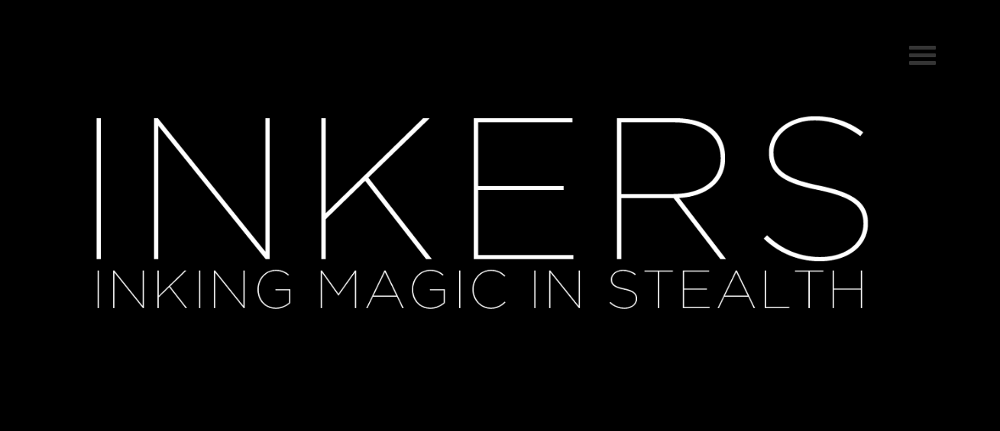
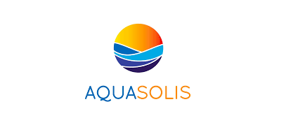
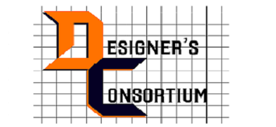

B Tech in Mechanical Engineering (2013-17) National Institute of Technology, Tiruchirappalli India
Experienced design engineer with a demonstrated history of working in the design industry. I love designing and validating new design
concepts using CAD/CAE softwares and that is why I am always open for new industrial design challenges 😎
Currently, I am interning at Inkers Tech Pvt Ltd, Bangalore, India
MODELLING AND SIMULATION SKILLS
SOLIDWORKS95%
CATIA99%
CREO80%
AUTOCAD85%
FREECAD70%
ANSYS99%
MATLAB85%
NX 80%
KEYSHOT95%
BLENDER80%
PROJECTS
WORK EXPERIENCE



CONTACT
DESIGN AND SIMULATION OF WIND TURBINE BLADE
In this project, I have designed wind turbine blade according to NREL specification (Source : Research Article) in CATIA.
After design phase, it was numerically simulated in the NASA wind tunnel to understand stress distribution over blade span
such that long light weight blade can be fabricated to increase power output.
As the result of compulsion rule regarding usage of helmet by all the drivers
in Tamilnadu Rane group Ltd has been came up with innovative helmet design challenge
in last year. For that challenge, we designed an innovative modular helmet as shown in
picture besides and then analyzedin Abaqus for cushioning effect. As a leader of my
team, I had a immense responsibility to make this work. My major role was to design helmet CAD
model and make simulation about its mechanism for perfectcommercial product for competition
In this project, I designed an impeller blades based on circular arc method
along with CFD Analysis for testing performance in ANSYS Fluent 15.0. Design
has done as per the standard flow testing parameters and boundary conditions
to find out an average load on each pedal of an impeller blade.
This was my first project with design and prototyping of goods
carrier from junk waste rusted bicycles to new goods carrier. My
major role was to design CAD model of bicycle in CATIA V5 for
goods carrier and then analyze in CATIA itself.
Package Used: CATIA, ANSYS Structural 15.0
BLOW MOLDING : PLASTIC BOTTLE
This is one of my amazing experience working with ANSYS to
analyze stresses generated in the glassy material in blow molding
process. As considering the basic fact about glass that it will be
brittle below transition temperature and it softens as temperature
will increase beyond transition temperature. It will be more or less
like a viscoelastic in this transition region. This can be analyzed
very efficiently using Ansys Polyflow 15.0.
Package Used: ANSYS Polyflow 15.0, Material Science
II PRIZE IN PDC PRAGYAN DESIGN CHALLENGE 2015
This was happened due to the support and collaboration of
members in team and I think, it was the phenomenal experience
to put presentation along with ideas in market place using
certain product design strategies. This competition is organized
by PTC Creo Inc.
Package Used: PTC Creo 3.0, Ansys Structural 15.0
INKERS TECH - DESIGN AND ADVANCED SIMULATION INTERN
Here at Inkers,my everyday work includes drone/ security cam/electric gadgets assembly design and its parametric study in SolidWorks 2017.
It is an exciting opportunity to work on material reduction, interior design, electronic thermal management, and dynamic
load case studies.
At Aquasolis, my work was started with an intensive literature review in the field of Mini-MED (Multiple Effect Distillation) process.
After taking one research article as a reference, I have modeled MED system components in Solidworks 16.0 and simulated MED pre
heaters using Ansys Fluent 15.0.My entire work was through online communication and discussion sessions among team members.
As a core member of Design Consortium(DC) club, I involved in several competitions and projects.
Some of the major ones are as follows:
Centrifugal impeller design and analysis
Modular helmet design and fabrication
Goods carrier design and prototyping
Design and simulation of wind turbine
Package Used: CATIA,ANSYS,AUTOCAD,CREO,NX
RESEARCH INTERN - McGILL UNIVERSITY, CANADA
Here, I was working under Prof. Allen Ehrlicher on the bio-inspired materials
project. I worked on both uni- and bi-directional freeze casting process which is used to enhance toughness of the composite by
mimicking nacre toughening mechanism.
Package Used: Material Science, Biology, MATLAB, MS Office
RESEARCH INTERN - IIT GUWAHATI
Here, I was working under the guidance of Prof. Ravi Sankar on simulation for abrasive
flow finishing process.In specific, I worked on viscoelastic modeling of carrier material
and to study relaxation based extra stress tensors.It inspired me to learn about
advanced materials and eventually it became my one of interests.
Package Used: Material Science, Biology, MATLAB, MS Office